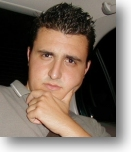

Board of Directors
| Board Members | |
|  |
Steven G. Andrés President, CEO Steve had a vision in mid-summer July 1999... that vision was Edgewood Associates. Along with the help of his partners, Steve has revolutionized the company with his immense financial backing and technological know-how. |
| Pete J. Bergman Bad Ass Mo'-Fo' As the Company's security manager, this Bad Ass Mo'-Fo' heads up a one man task force capable of securing all company assets. No small detail eludes this finely tuned security machine, not even a little raver slipping in the back door. |
|
| Chris J. Sandro Work Avoidance Engineer By far one of the most important positions at Edgewood Associates, little is known as to what exactly Chris does. All he is willing to acknowledge is that it involves huge contracts from popular cable television and personal fitness conglomerates. |
|
| Dave C. Milligan Chief Alcohol Consumer As the newest member in the corporate office, Dave's overview of consumption has greatly improved company morale. His commitment to the company is so strong that one could see him working in the office even on Friday and Saturday night. |
|
| Jay M. B. Villarreal Chief Technology Officer As the only Philo and Technology Officer at Edgewood Associates, Jay often finds
himself over worked at off site locations till 4-5 a.m. on Friday and Saturdays.
This nonstop worker will stay up all night with no sleep and show up at the
office the following day cheerful as ever preparing for the company BBQ.
Although this Techi may come off as a little slow at times when it comes to
downloading computer programs (such as ICQ) or fixing your computer problems
he's always on the job within 5-8 hours. |
|
| John M. Leffler Broadcast Media Analyst John heads up the Costa Mesa division at one of our affiliate office. His satellite management skills have become so great that he often runs his division from the corporate office. |
|